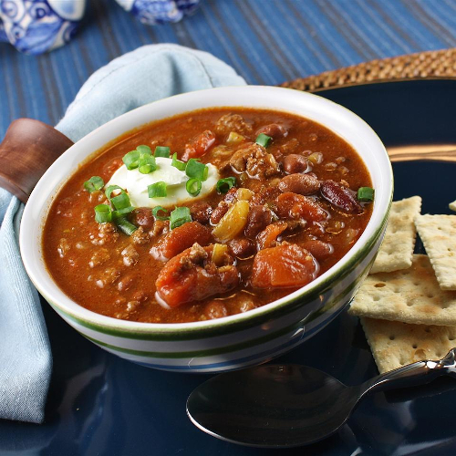

Rob's Famous Chili

Description
This is one of my favourite dishes that Rob makes to spoil me. It is both savoury and sweet. Mop it up with some cornbread.
Ingredients
- ½ pound thick-cut bacon, chopped
- 1 large yellow onion, chopped
- 1 ½ pounds ground beef
- 3 cloves garlic, chopped
- 1 tablespoon ground cumin
- 3 (15.5 oz) cans kidney beans, rinsed and drained
- 1 (14.5 oz) can fire-roasted diced tomatoes
- 2 cups water
- ¼ cup chili powder
- 1 teaspoon liquid smoke flavoring
- Salt and ground black pepper to taste
- 1 dash hot pepper sauce (such as Tabasco®), or to taste (optional)
Steps
- Cook bacon and onion together in a large pot over medium heat until the onion is translucent which takes about 5 minutes.
- Add ground beef, garlic and cumin to the pot.
- Cook and stir until the beef is completely browned - roughly 7 to 10 minutes.
- Stir kidney beans, diced tomatoes, water, chili powder, liquid smoke, salt, black pepper, and hot pepper sauce into the beef mixture.
- Bring to a simmer and cook until thick. This takes about 1 hour. Skim excess grease if desired.
Looking for our other favourite recipes?